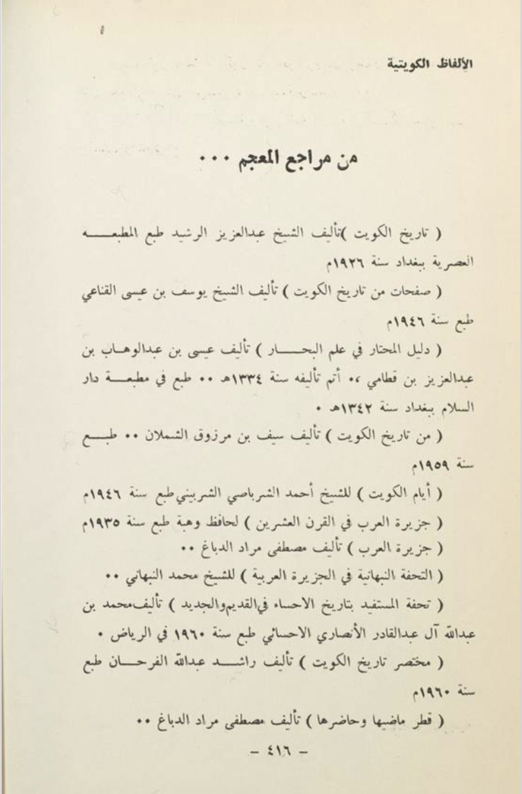

Published Baghdad, 1964 · Book pages, by Sheikh Jalal Al-Hanafi Al-Baghdadi, Asaad Press, Baghdad, 1964 (New York University Libraries copy)
Mu’jam Al-Alfaz Al-Kuwaitiya: Dalil Al-Muhtar printed in Baghdad in 1342 AH, and the family in Sharq
What it is
Page 416, the dictionary’s sources: «Dalil Al-Muhtar fi Ilm Al-Bihar, by Eissa bin Abdulwahab bin Abdulaziz bin Qatami; he completed it in 1334 AH; printed at Dar Al-Salam Press in Baghdad in 1342 AH». Page 197, quoting Ibn Rashid’s Tarikh Al-Kuwait (1926): in Sharq stood «the house of Eissa Al-Qatami, author of Dalil Al-Muhtar fi Ilm Al-Bihar». Page 30: the batli, an instrument for finding the wind, «mentioned by Al-Qatami in his book». Page 316: «Al-Gutami: Al-Qatami, a Kuwaiti family», and the author’s note that Masjid Al-Qatami was founded by Sultan bin Majid.
Why it matters
Gives the first printing of Dalil Al-Muhtar, Baghdad 1342 AH (1923 to 1924), and the year Eissa finished writing it, 1334 AH (1915 to 1916).
Page copies


Notes
Other sources give 1942 (Al-Khalidi) and 1950 for later printings. The founding of Masjid Al-Qatami by Sultan bin Majid is the author’s statement; the mosque’s inscription dates it to 1250 AH (1834). Only the first pages are shown here. Family members who sign in can see all 5 pages.
Others named
Sources
Jalal Al-Hanafi, Mu’jam Al-Alfaz Al-Kuwaitiya fi Al-Khitat wal-Lahajat wal-Bi’a, Baghdad, 1964
How this text was made: Photographed from the printed pages.
Open in the interactive site